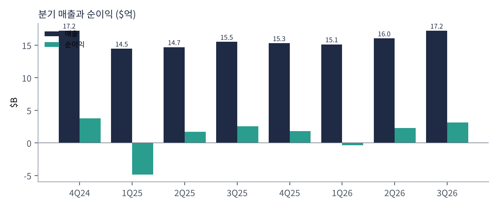
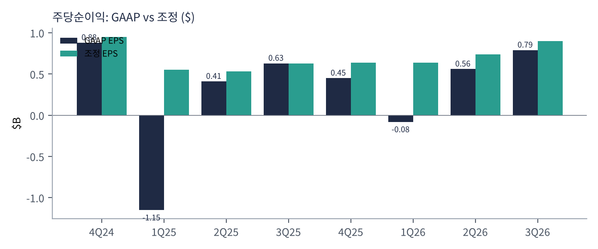
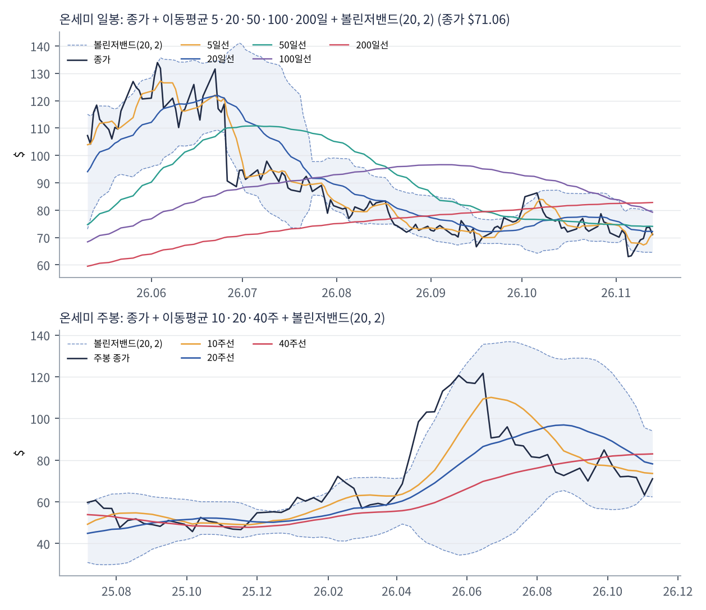
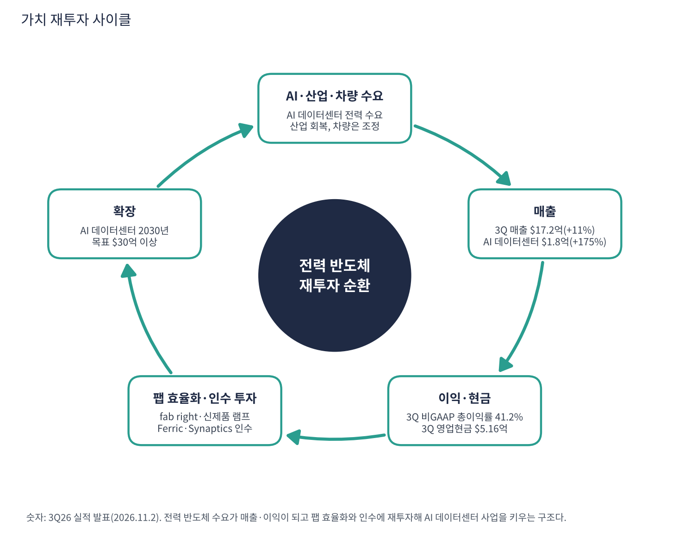

온세미는 전기차·산업·AI 데이터센터용 전력 반도체와 센서를 만드는 회사다. AI 데이터센터 매출이 +175%로 뛰고 총이익률이 5분기 연속 오르고 있지만, 차량 부문 감소와 Synaptics 인수 부담이 있는 회사다.
| 항목 | 내용 |
|---|---|
| 종목 | onsemi (ON) · NASDAQ · 전력·센서 반도체 · 애리조나 스코츠데일 |
| 멀티플 | PER 41.4배(TTM, GAAP) · P/S 4.60배 (11/13 종가 $71.06) |
| 최근 분기(3Q26) | 매출 $17.2억(+11%), GAAP EPS $0.79, 조정 EPS $0.90, 비GAAP 총이익률 41.2% |
| 가이던스(4Q26) | 매출 $17.15~18.15억, 비GAAP 총이익률 41.5~43.5% |
| 현금·부채 | 스캐너: 현금·단기투자 $43.7억, 총차입금 $47.1억, TTM 잉여현금 $16.2억 |
| 직책 | 인물 | 역할·특징 |
|---|---|---|
| 사장·CEO | 하산 엘-코우리(Hassane El-Khoury) | 'fab right'(팹 효율화)와 AI 데이터센터 확대를 이끎 |
| CFO | 태드 트렌트(Thad Trent) | '매출 11% 성장에 EPS 40% 이상 증가'로 영업 레버리지를 설명 |
경영 스타일: '팹 효율화로 마진을 올리고 AI 전력 시장으로 무게를 옮긴다'. 3Q 총이익률이 5분기 연속 올랐고(전분기 대비 +190bp), AI 프로세서 전력 공급 기업 Ferric 인수($6억 + 최대 $1.75억 성과금)와 Synaptics 인수(주당 $123 현금, 약 $57억)로 사업 범위를 넓히고 있다.
전력 솔루션(PSG)이 매출의 약 52%이고 AI 데이터센터 전력 공급용 제품을 늘리고 있다(내 계산).
Ferric 인수로 2030년 목표를 $5억 올려 $30억 이상으로 제시했다(회사 발표).
다음 실적발표(4Q26)는 세 가지 질문에 답하는 자리다.
질문 1. AI 데이터센터 매출이 4Q에도 빠르게 느는가?
| 확인할 숫자 | 좋아지면 | 나빠지면 |
|---|---|---|
| 3Q AI 데이터센터 $1.8억(+175%), 4Q 가이던스 전분기비 10%대 중반 증가, 2026년 약 $6.2억(+140%) | 가이던스대로 늘면 ②매출 고리가 유지된다 | 정체하면 AI 성장 기대가 약해진다 |
질문 2. 총이익률이 가이던스 범위(41.5~43.5%)로 오르는가?
| 확인할 숫자 | 좋아지면 | 나빠지면 |
|---|---|---|
| 4Q 비GAAP 총이익률 41.5~43.5%(3Q 41.2%), 매출 $17.15~18.15억 | 범위 상단이면 ③이익 고리가 견고하다 | 하단 미달이면 가동률·가격 부담 신호다 |
질문 3. 차량 부문 감소와 인수 부담은 어떻게 되는가?
| 확인할 숫자 | 좋아지면 | 나빠지면 |
|---|---|---|
| 4Q 차량 매출 전분기비 한 자릿수 후반 감소 가이던스, Synaptics 약 $57억(현금) 인수, 현금 $43.7억 vs 차입금 $47.1억 | 회사 설명대로 차량 공급이 2027년 초 정상화되면 ④투자 부담이 줄어든다 | 감소가 커지거나 인수가 늦어지면 재무 부담이 커진다 |
한 줄 판정 규칙: 첫 질문이 가이던스대로 나오면 약한 고리(차량 부진)를 AI 성장이 메운다는 근거가 되고, 총이익률이 내려가면 이익 고리의 근거가 약해진다.
일정: 2027-02-08 예정(트레이딩뷰 일정, 회사 확정 확인 필요).
| 분기 | 매출 | 순이익 | EPS | 조정 EPS | 특이 사항 |
|---|---|---|---|---|---|
| 4Q24 | $17.2억 | $3.8억 | 0.88 | 0.95 | |
| 1Q25 | $14.5억 | $-4.9억 | -1.15 | 0.55 | GAAP 순손실 -$4.9억(원인 확인 필요) |
| 2Q25 | $14.7억 | $1.7억 | 0.41 | 0.53 | |
| 3Q25 | $15.5억 | $2.5억 | 0.63 | 0.63 | |
| 4Q25 | $15.3억 | $1.8억 | 0.45 | 0.64 | |
| 1Q26 | $15.1억 | $-0.3억 | -0.08 | 0.64 | GAAP 순손실 -$0.3억, 조정 EPS는 흑자 |
| 2Q26 | $16.0억 | $2.3억 | 0.56 | 0.74 | |
| 3Q26 | $17.2억 | $3.1억 | 0.79 | 0.90 | 매출 +11%, 조정 EPS +43%(전년비) |


값은 트레이딩뷰 스캐너 분기 이력이다. 조정 EPS는 트레이딩뷰 Reported(비GAAP)다. 1Q25·1Q26의 GAAP 순손실 원인은 이번에 구하지 못했다(확인 필요). 분기 설비투자는 구하지 못했다.
흐름 요약: 매출은 4Q24 $17.2억에서 1Q25 $14.5억으로 줄었다가 3Q26 $17.2억으로 회복했다. 조정 EPS는 $0.95에서 저점 $0.53(2Q25)을 거쳐 $0.90이 됐다.
| 항목 | 값 | 비고 |
|---|---|---|
| 3Q 전력 솔루션(PSG) | $8.90억 | 전년비 +21%, 비중 약 52%(내 계산) |
| 3Q 아날로그·혼합신호(AMG) | $5.97억 | 전년비 +2%, 비중 약 35% |
| 3Q 지능형 센싱(ISG) | $2.35억 | 전년비 +2%, 비중 약 14% |
| 3Q AI 데이터센터 | $1.8억 | 전년비 +175%, 2026년 약 $6.2억 전망 |
AI 데이터센터는 전사 매출의 약 10%다(내 계산). 4Q 가이던스(전분기비)는 AI 10%대 중반 증가, 산업 10%대 초반 증가, 차량 한 자릿수 후반 감소다. 지역·고객별 표는 10-Q에 있으며 이번에 구하지 못했다.
온세미는 '지능형 전력·센싱으로 전기화와 AI 확산 시대의 효율을 높이는 것'을 목표로 한다.
| 축 | 최근 움직임 |
|---|---|
| AI 데이터센터 | 2026년 약 $6.2억 → 2027년 2배 → 2030년 $30억 이상(회사 제시) |
| 제조 | fab right(팹 효율화)로 총이익률 5분기 연속 상승 |
| 사업 확장 | Ferric($6억), Synaptics(주당 $123 현금, 약 $57억) 인수 |

| 이동평균 | 값 | 종가 대비 | 해석 |
|---|---|---|---|
| 5일선 | $71.43 | -0.5% | 현재가가 아래 |
| 20일선 | $72.19 | -1.6% | 현재가가 아래 |
| 50일선 | $74.06 | -4.1% | 현재가가 아래 |
| 100일선 | $79.24 | -10.3% | 현재가가 아래 |
| 200일선 | $82.78 | -14.2% | 현재가가 아래 (-14%) |
주봉 흐름: 52주 고점 $134.92(6/3), 52주 저점 $44.56(11/21). 현재가 $71.06는 200일선 $82.78보다 아래, 50일선 $74.06보다 아래에 있다.
| 규칙 | 기준 | 현재 값 | 신호 |
|---|---|---|---|
| 장기 추세 필터 | 종가 vs 200일선 | $71.06 < $82.78 | 매도 |
| 중장기 교차 | 50일선 vs 200일선 | $74.06 < $82.78 | 매도 |
| 단기 교차 | 20일선 vs 50일선 | $72.19 < $74.06 | 매도 |
| 돈키언 채널 | 55일 고가 $86.92 / 저가 $61.90 | 중간값 $74.41 아래 | 매도 |
| 1개월 모멘텀 | 21거래일 수익률 | -3.6% (기준 $73.70) | 매도 |
| 3개월 모멘텀 | 63거래일 수익률 | -14.8% (기준 $83.38) | 매도 |
| 6개월 모멘텀 | 126거래일 수익률 | -37.2% (기준 $113.11) | 매도 |
| 12개월 모멘텀 | 252거래일 수익률 | +44.2% (기준 $49.27) | 매수 |
| 종합 (8개 평균) | -0.75 | 강한 매도 |
해석: 8개 신호 중 매수 1개, 매도 7개(점수 -0.75, 강한 매도)다. 14일 ATR $4.88 (6.9%).
| 가격·조건 | 무엇이 바뀌나 | 의미 |
|---|---|---|
| $82.78 돌파 | 200일선 | 매도 → 매수 |
| 50일선이 200일선 위로 | 50/200 교차 | 매도 → 매수 |
| 20일선이 50일선 위로 | 20/50 교차 | 매도 → 매수 |
| $74.41 돌파 | 돈키언 중간값 | 매도 → 매수 |
| $73.70 돌파 | 1개월 기준가 | 매도 → 매수 |
| $49.27 돌파 | 12개월 기준가 | 이탈하면 매수 → 매도 |
| 구분 | 가격대 | 근거 |
|---|---|---|
| 저항 1 | $71.43 | 5일선 |
| 저항 2 | $72.19 | 20일선 |
| 지지 1 | $61.90 | 55일 저점 |
| 지지 2 | $44.56 | 52주 저점 |
점수는 -0.75(강한 매도)다. 14일 ATR은 $4.88로 현재가의 6.9%다. 가까운 저항 $71.43을 종가로 넘는지와 가까운 지지 $61.90를 지키는지가 신호 전환의 기준이다. (내 가정, 매매 권유 아님)
| 악재 요인 | 내용 | 강도 |
|---|---|---|
| 차량 의존·공급 배분 | 4Q 차량 매출 전분기비 한 자릿수 후반 감소 가이던스 | 중간 |
| 인수 부담 | Synaptics 약 $57억(현금, 부채 조달 약정), Ferric $6억. 2027년 중반 마감 예상 | 중간 |
| 실적 변동 | GAAP 순손실 분기 이력(1Q25 -$4.9억, 1Q26 -$0.3억) | 중간 |
| 주가 추세 | 52주 고점 $134.92(6/3) 대비 약 -47%(내 계산), CTA -0.75(강한 매도) | 중간 |
| 밸류에이션 | PER 41배(GAAP), 조정 기준 PEG 약 2.5 | 중간 |
| 티커 | 회사 | PER(TTM) | PEG | P/S | EPS 성장(YoY) |
|---|---|---|---|---|---|
| ON | 온세미 | 41.4배 | 0.35 | 4.60배 | +124% |
| ADI | 아날로그 디바이시스 | 47.2배 | 0.42 | 14.41배 | +114% |
| TXN | 텍사스 인스트루먼트 | 39.4배 | 1.00 | 13.86배 | +41% |
| NXPI | NXP | 20.8배 | 0.37 | 4.92배 | +57% |
| MCHP | 마이크로칩 | 46.7배 | – | 6.10배 | – |
| MPWR | 모놀리식 파워 | 76.8배 | – | 19.04배 | -54% |
ON 첫 행은 스캐너 값이다. 조정 PEG는 약 2.5(내 계산)다. MCHP·MPWR은 PEG가 산출되지 않았다.
온세미는 현금·단기투자 $43.7억과 총차입금 $47.1억을 가졌고 TTM 잉여현금이 $16.2억이다. 3Q 영업현금은 $5.16억(+23%)이며, 인수 자금을 위해 3Q 자사주 매입을 $3.4억(2Q)에서 $0.2억으로 줄였다.
| 지표 | 값 | 계산·출처 | 해석 |
|---|---|---|---|
| 현금·단기투자 | $43.7억 | 스캐너 | 회사 설명: 유동성 $59억(미사용 신용한도 $15억 포함) |
| 총차입금 | $47.1억 | 스캐너 | 순차입 약 $3.4억(내 계산) |
| TTM 잉여현금흐름 | $16.2억 | 스캐너 | TTM 매출 $63.7억 대비 약 25.4%(내 계산) |
| TTM EBITDA | $20.0억 | 스캐너 | TTM 매출 대비 약 31.4%(내 계산) |
| 기준 | 값 | 비고 |
|---|---|---|
| P/S (TTM) | 4.60배 | 스캐너 |
| 동종 | ADI 14.4, TXN 13.9, NXPI 4.9, MCHP 6.1, MPWR 19.0 | 11/13 스캐너 |
해석: P/S 4.6배는 아날로그·전력 동종(ADI 14.4배, TXN 13.9배)보다 낮고 NXPI(4.9배)와 비슷하다. 총이익률(TTM 38.1%)이 ADI(60.4%)보다 낮은 점이 배경으로 보인다(내 해석).
| 지표 | 값 | 판정 |
|---|---|---|
| PER (GAAP TTM) | 41.4배 | 스캐너 |
| PER (조정 TTM) | 약 24.3배 | $71.06 ÷ 최근 4분기 조정 EPS $2.92(내 계산) |
| TTM 잉여현금 마진 | 약 25.4% | $16.2억 ÷ 매출 $63.7억(내 계산) |
| EBITDA 마진 | 약 31.4% | $20.0억 ÷ $63.7억(내 계산) |
| 방식 | PER | EPS 성장률 | PEG | 판정 |
|---|---|---|---|---|
| 트레이딩뷰 (GAAP TTM) | 41.4배 | +124.2% | 0.35 | 저기저 효과(1Q25 순손실) |
| 조정 EPS (내 계산) | 24.3배 | +9.8% | 약 2.5 | 최근 4분기 $2.92 ÷ 직전 4분기 $2.66 |
판정: 트레이딩뷰 PEG 0.35는 0.5 이하 구간이지만 1Q25 GAAP 순손실로 직전 기준이 낮아진 효과다. 조정 EPS 기준 PEG는 약 2.5로 1.0을 넘는다.3Q 조정 EPS는 전년비 +43%라, PEG는 어떤 EPS 성장률을 쓰느냐에 따라 크게 달라진다(내 해석).

온세미의 사이클은 전력 반도체 수요 → 매출 → 이익·현금 → 팹·인수 투자 → 확장이다. 번 현금으로 팹 효율화와 인수에 투자해 AI 데이터센터로 사업을 넓힌다.
| 고리 | 현재 숫자 | 고리 강도 | 약해지는 신호 |
|---|---|---|---|
| ① 전력 반도체 수요 | AI 데이터센터 +175%, 산업 회복 | 강함 | 차량 공급 배분 조정 |
| ② 매출 | 3Q 매출 $17.2억(+11%) | 보통 | AMG·ISG는 +2%에 그침 |
| ③ 이익·현금 | 총이익률 41.2%, 3Q 영업현금 $5.16억 | 강함 | 1Q25·1Q26 GAAP 적자 이력 |
| ④ 팹·인수 투자 | fab right, Ferric·Synaptics | 보통 | 인수 자금(현금·부채) |
| ⑤ 확장 | AI 데이터센터 2030 목표 $30억+ | 보통 | 목표는 회사 제시치 |
구조: ①③이 강하지만 ②의 비AI 부문(AMG·ISG)이 낮게 크고 있고, ④에서 Synaptics 인수로 자금 부담이 늘어난다. AI가 매출의 약 10%라 사이클 전체를 끌고 가려면 더 커져야 한다(내 해석).